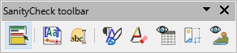
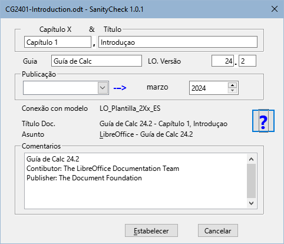
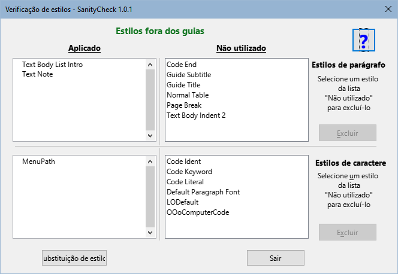
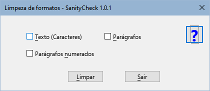
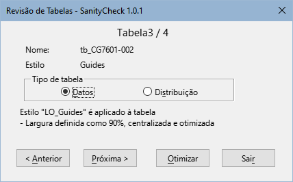
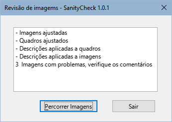

Macros para unificar o formato e estilos dos guias do LibreOffice v24.
Copyright
Este documento é protegido por direitos autorais ©2024 pela equipe de documentação do LibreOffice. Os contribuidores estão listados abaixo. Pode ser distribuído e modificado nos termos do GNU General Public Licenseversão 3 ou posterior ou the ,Creative Commons Attribution Licenseversão 4.0 ou posterior.
Todas as marcas registradas mencionadas neste guia pertencem aos seus legítimos proprietários.
|
Autor |
Colaboradores |
|
B.Antonio Fernández |
Olivier Hallot |
Fontes
As macros que compõem a extensão aqui descrita são o resultado da consulta de diferentes fontes que nomeio em termos gerais, uma vez que me é impossível entrar em detalhes. Estes são:
-
A documentação da LibreOffice Basic e dos diferentes derivados do StarOffice.
-
Os livros: Aprendiendo OooBasic por Mauricio Baeza, OpenOffice.org Macros Explained por Andrew Pitonyak e Programmation OpenOffice.org por Bernard Marcelly.
Bem como diversas consultas aos fóruns OpenOffice e LibreOffice e o estudo de outras macros nas extensões para LibreOffice.
Introdução
SanityCheck é uma biblioteca de macros para o Writer que visa ajudar a unificar a formatação e os estilos dos capítulos e guias do LibreOffice.
Embora algumas tarefas possam ser executadas com ferramentas próprias do Writer, as macros tentam centralizar opções específicas do formato do capítulo e automatizar alguns processos que podem ser tediosos e demorados.
Como regra de segurança, trabalhe em uma cópia do arquivo que irá revisar e faça cópias progressivas do seu trabalho.
Utilize macros preferencialmente em capítulos, antes de montar o guia, pois será mais fácil corrigir erros de formatação e reduzirá o tempo de execução das macros.
Instalação e recursos
As macros são empacotadas como uma extensão e instaladas como qualquer outra extensão, a partir do gerenciador de extensões. Embora seja improvável que você tenha a versão 1.0.0 desta extensão, é recomendável desinstalá-la para evitar problemas.
-
As macros são escritas em LO Basic portanto devem ser compatíveis com qualquer sistema operacional sem a necessidade de instalação de dependências.
-
A extensão adiciona uma barra de ferramentas (Figura 1), bem como um menu chamado LO SanityCheck e as ferramentas também aparecem integradas à interface do usuário In Tabs.
Figura 1: Caixa de diálogo SanityCheck

-
As macros estão disponíveis em espanhol, inglês e português, com possibilidade de agregar outros idiomas adicionando traduções ao módulo L10n.
-
A extensão incorpora modelos com estilos próprios dos guias (também nos três idiomas para permitir a correção ortográfica):
Modelo de capítulo (para capítulos individuais).
Modelo de Documento Mestre (para montar o guia completo).
Modelo de contracapa (para anexar no final do guia completo).
-
Cada caixa de diálogo contém uma página de ajuda integrada que fornece informações sobre a função da ferramenta e, após a execução das macros, um resumo do log de alterações é exibido.
Descrição das macros
Alternar destaque
Campos do documento (Figura 2)
Figura 2: Caixa de diálogo Campos do documento

-
Nota
Os campos Capítulo X e Título são novos campos. Esses campos são utilizados para definir a propriedade Título do documento e também para o rodapé. Seu uso é recomendado para o nome do capítulo na primeira página.
Renomear objetos (Figura 3)
Figura 3: Caixa de diálogo Renomear objetos

Verificar estilos (Figura 4)
-
A macro verifica se os estilos utilizados nos capítulos seguem os padrões dos modelos para evitar estilos estranhos aos guias (geralmente estilos de modelos anteriores).
-
A macro percorre o documento e marca os parágrafos com estilo estranho à documentação com um comentário e destaca os estilos de caracteres estrangeiros com fundo preto e fonte amarela.
-
A macro substitui os estilos de parágrafo anteriores aos guias da versão 24 pelos seus correspondentes atualizados, alguns com nomes incorretos (transição para o novo modelo) e o estilo de caractere MenuPath com Ênfase Forte (resquícios de versões antigas).
-
A macro permite a eliminação de estilos estranhos quando não estão aplicados ao documento.
Figura 4: Caixa de diálogo Verificação de estilos

-
Nota
As macros não podem fazer tudo. O trabalho do revisor é substituir os estilos fora do modelo pelos corretos e eliminá-los do documento
Limpeza de formato direto (Figura 5)
Figura 5: Caixa de diálogo Limpeza de formatos

-
Texto: limpa a formatação direta aplicada a fragmentos ou strings de texto.
-
Parágrafos: Elimina a formatação direta, incluindo marcadores ou numeração, aplicada a parágrafos normais e também limpa a formatação direta de listas não ordenadas.
-
Parágrafos Numerados: Neste caso, a macro remove a formatação direta aplicada às listas ordenadas e redefine a numeração sempre que possível, adicionando um comentário aos parágrafos onde a numeração pode precisar ser redefinida.
-
Nota:
Para que a macro redefina corretamente a numeração, cada lista deve ser precedida pelo estilo de parágrafo Body Text, List Intro. Em muitos casos, o estilo antes das listas é Corpo de texto. A macro altera o estilo dos parágrafos anteriores as listas para o estilo Body Text, List intro após uma mensagem de confirmação.
Ajuste de tabelas (Figura 6)
Figura 6: Caixa de diálogo Revisão de Tabelas

Ajuste de figuras
Figura 7: Caixa de diálogo Log de Ajuste de figuras

Esta macro não possui diálogo inicial, ela roda com as configurações ideais para os quadros e imagens. Na caixa de diálogo de registro (Figura 7), você pode acessar a macro Percorrer imagens.
-
Aplica a âncora e a formatação apropriadas às imagens, aos quadros que as contêm e às legendas.
-
Obtém o texto da legenda para aplicar à descrição ao quadro e a imagem.
-
Insira comentários em:
-
Imagens cuja proporção no é proporcional.
-
Imagens que foram recortadas com Writer.
-
Legendas mal formadas (possíveis erros na modificação de uma legenda já inserida).
Percorrer imagens (Figura 8)
Figura 8: Caixa de diálogo Percorrer imagens

Limitações, problemas conhecidos e dicas
Modelos
As macros para verificação de estilos e limpeza de formatação direta baseiam-se diretamente nos estilos dos modelos fornecidos.
Para que as macros funcionem corretamente, os capítulos devem ter o modelo apropriado aplicado usando a extensão Template Changer ou os estilos devem ser importados do modelo.
Problema:
Solução:
-
Crie um novo documento a partir do modelo.
-
Salve esse documento como modelo.
-
Importe o modelo criado para o diretório de modelos do usuário, se necessário.
Campos
Os campos de propriedade do documento introduzidos na versão 24, como Contribuidor, Editor, etc., não são acessíveis (no momento) por as macros. Se necessário, defina esses campos na caixa de diálogo Propriedades do documento do Writer.
Estilos
Problemas com nomes de estilos:
Solução:
Problema com estilos de caracteres:
Solução:
Limpeza do formato direto de parágrafos
A macro não consegue distinguir que tipo de formatação direta foi aplicada a um parágrafo, portanto elimina toda formatação direta: recuo, numeração, espaçamento, etc.
Conselhos:
Limpeza do formato direto de números (listas ordenadas)
A sequência de numeração nas listas ordenadas poderá ser interrompida por imagens, avisos, notas ou sugestões.
Ao limpar o formato, a sequência de numeração é perdida e a numeração torna-se contínua. As macros tentam redefinir a numeração, mas não é fácil distinguir onde redefini-las. Embora a macro avise sobre pontos onde pode ser reiniciada, a macro não é infalível.
Conselho:
Tabelas
Os estilos de tabela personalizados não se aplicam ou funcionam como estilos de parágrafo ou caractere, portanto, mesmo se você aplicar o estilo LO User Guides, provavelmente precisará ajustar a tabela para divisão de página, se necessário, e aplicar uma formatação mais apropriada usando a caixa de diálogo Propriedades da tabela do Writer.
Imagens
Em alguns casos, a macro insere um comentário nas imagens que não é compreensível.
Problema:
Solução:
Legendas das figuras
Em alguns casos, a macro insere um comentário de legenda mal formado que não é compreensível.
Problema:
Solução:
Problema:
Solução:
Sobre a tradução
Se você leu até aqui, terá visto muitos erros de vocabulário e gramaticais.
Este documento foi traduzido do espanhol com o Google (algumas correções feitas por mim).
Lamento que meu português seja tão ruim, mas espero que este documento seja compreensível.